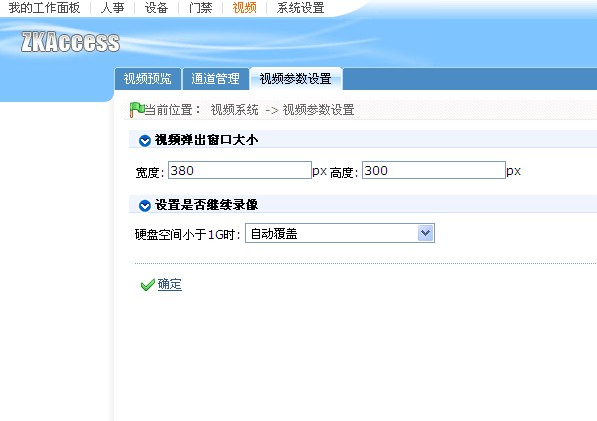

视频参数设置，可以对视频弹出框大小以及录像硬盘空间不足时的处理方式进行设置。

视频弹出窗口大小:
设置弹出框的长和宽，包括实时监控视频弹出框、报表页面视频录像记录回放弹出框。
设置是否继续录像:
软件在进行视频联动录像时，会自动判断当前录像文件保存路径所在硬盘的剩余空间大小，
当小于1G时，用户可以选择自动覆盖或者不录像，如果选择了自动覆盖，软件会先删除最早
的100个录像文件，继续录像。否则，将不会录像。